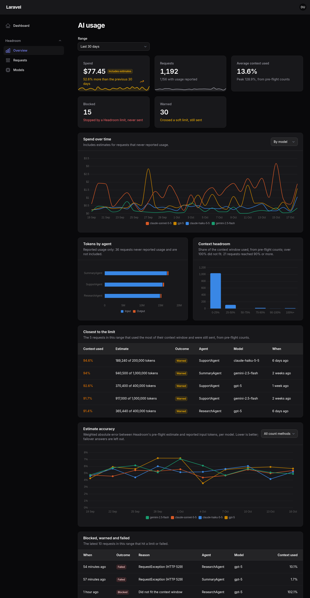
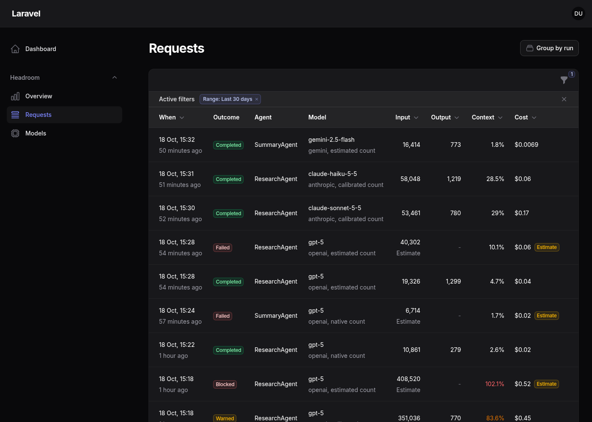
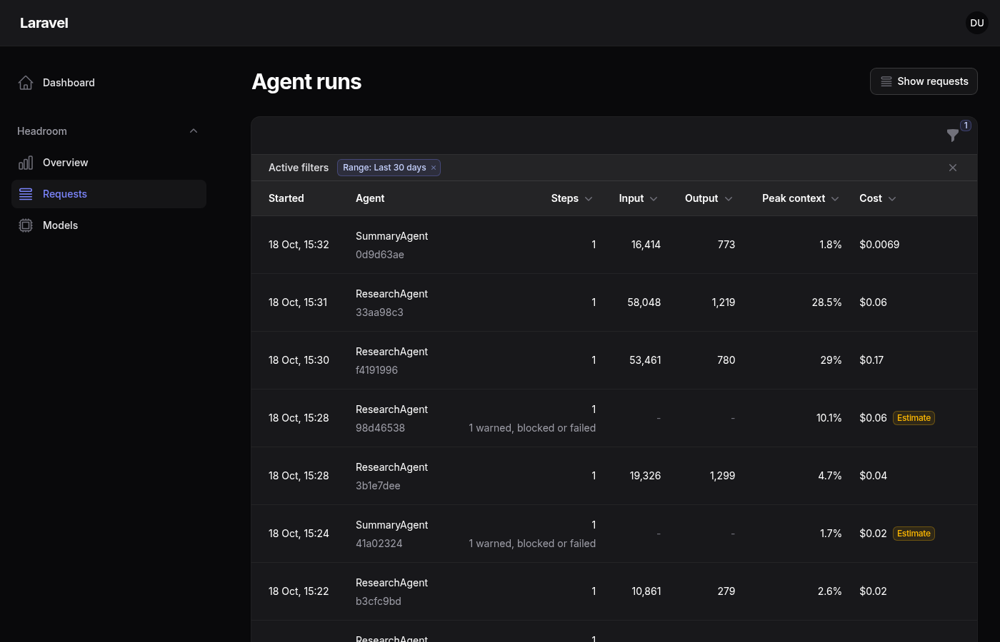
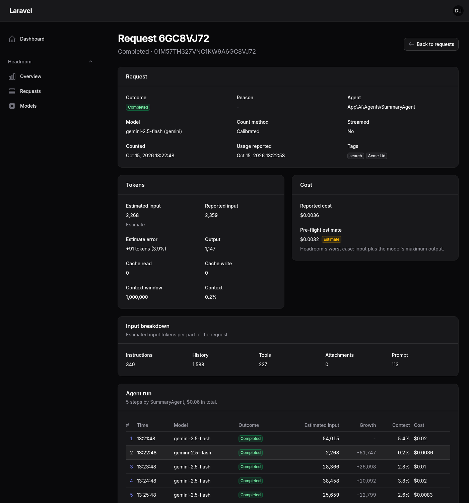
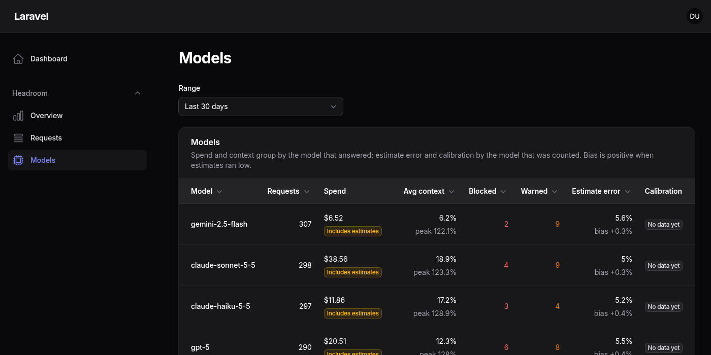
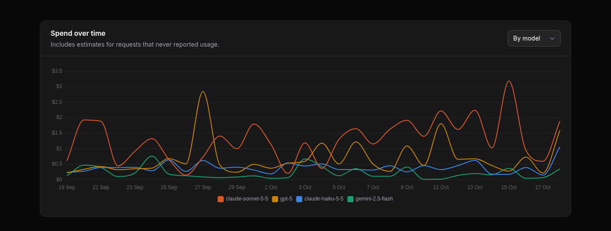

See what your AI requests cost, inside Filament.
Headroom for Filament is a dashboard for your Filament panel: spend and its trend, tokens by agent, how close requests came to their context window, how accurate the estimates were, and every request and agent run. It reads the Headroom Ledger, stores nothing itself, and never shows an estimate as billed cost.
composer require phoenix1331/filament-headroom php artisan vendor:publish --tag=headroom-ledger-migrations php artisan migrate php artisan filament:assets
The Overview page, from 90 days of demo data

Charts follow the panel theme. Their colours are checked for colour vision deficiency on both.
The pre-flight side of AI spend, where your team already works
Most AI cost dashboards only know what a request cost after it ran. Headroom counts every request before it is sent, so this dashboard also shows what was predicted: how far off the estimates are per model, which agents creep towards their context limit, and which requests were warned or blocked before they could cost anything.
It installs as a Filament plugin, so it sits in the admin panel your team already uses, behind the same login, with your own authorisation rule.
Three pages and seven widgets
Every widget follows the page's range (7, 30 or 90 days). Pages, widgets and navigation can each be turned off, reordered or regrouped.
-
Requests
Every ledger entry, paginated and sorted by the ledger, filtered by range, agent, provider, model, outcome, count method and your context tags.

-
Agent runs
Group by run to see each agent invocation: its steps, tokens, peak context, cost and any warned, blocked or failed steps.

-
Request detail
Estimate against reported tokens, the input breakdown, cost with its basis, and every step of the run with how much the context grew.

-
Models
Per model: requests, spend, average and peak context, blocked and warned counts, estimate error and bias, and Headroom's calibration status.

-
Widgets
Stats overview, spend over time, tokens by agent, context headroom, closest to the limit, estimate accuracy, and blocked, warned and failed requests.

An estimate is never shown as billed cost
Headroom prices requests before they are sent, and the ledger keeps that estimate apart from what the provider reported. Every cost on every page and widget carries its basis:
- Estimate
No usage was reported: the request was blocked, failed or never answered, so this is Headroom's pre-flight worst case.
- Includes estimates
A total where some requests never reported usage and count at their estimate.
- Approximate
Usage was reported, but cache tokens could not be priced exactly.
Amounts in different currencies are kept apart and never converted, and sub-cent costs keep four decimals so they do not read as zero. Token charts show reported tokens only and say how many requests never reported usage.
Install
-
Require the plugin
It brings Headroom and the Headroom Ledger with it. Needs PHP 8.3+, Laravel 12 or 13 and Filament 5.
composer require phoenix1331/filament-headroom
-
Create the ledger tables
php artisan vendor:publish --tag=headroom-ledger-migrations php artisan migrate
-
Register the plugin and say who may see it
Without
authorize()the dashboard is only visible in thelocalenvironment, like Horizon and Pulse.use Phoenix1331\FilamentHeadroom\HeadroomPlugin; public function panel(Panel $panel): Panel { return $panel // ... ->plugin( HeadroomPlugin::make() ->authorize(fn ($user): bool => $user->isAdmin()), ); }
-
Publish the stylesheet
php artisan filament:assets
-
Record some traffic
The ledger records every request your agents send through Headroom. Pages appear in your panel under a Headroom group: Overview, Requests and Models.
Configure
Every option is a fluent method on the plugin, and closures are welcome wherever a value depends on the request.
HeadroomPlugin::make()
->authorize(fn ($user): bool => $user->can('viewAiUsage'))
->navigationGroup('Monitoring') // null for no group
->navigationSort(20) // moves the whole Headroom block
->navigationIcon('heroicon-o-cpu-chip', Overview::class)
->defaultRange('7d') // '7d', '30d' (default) or '90d'
->tagLabel(fn (string $key, string $value): string =>
$key === 'tenant_id' ? Team::find($value)?->name ?? $value : $value)
->widgets([StatsOverview::class, SpendOverTime::class])
->pages([Overview::class, Requests::class]);
| Option | Default |
|---|---|
authorize() | Visible only in local; the callback must return exactly true |
navigationGroup(), navigationIcon(), navigationSort() | A translated "Headroom" group; each page's own icon and order |
defaultRange() | 30 days |
tagLabel() | key: value |
widgets(), pages() | All of them; pass a subclass to customise one |
scopeToTenant() | Off |
allowForgettingTags() | Off |
On your own dashboards too
Every widget works on any Filament dashboard, following the same authorisation. Add the range picker to the dashboard's filters form and they follow it:
use Phoenix1331\FilamentHeadroom\Support\RangeSelect; use Phoenix1331\FilamentHeadroom\Widgets\StatsOverview; class Dashboard extends BaseDashboard { use HasFiltersForm; public function filtersForm(Schema $schema): Schema { return $schema->components([RangeSelect::make()]); } }
Authorisation, tenants and data subject requests
- Closed by defaultNothing is visible outside
localuntil you setauthorize(). Widgets refuse to load for users who may not see them, even when loaded directly. - One tenant at a time
scopeToTenant('tenant_id')limits every page, widget, filter, run and detail view to the current Filament tenant. With no tenant, nothing matches. - Forget on request
allowForgettingTags()adds a confirmed action that erases a tag value, such as a user ID, through the ledger. Off by default and never offered under tenant scoping.
Tests check every page and widget for leaks between tenants. The ledger never stores prompt or response text, so the dashboard cannot show it. See the security policy for the details.
The Headroom family
Three packages, each useful on its own.
-
Headroom
phoenix1331/laravel-ai-headroomCounts tokens before a request is sent, guards context and cost limits, calibrates estimates. Stores nothing. Site
-
Headroom Ledger
phoenix1331/laravel-ai-headroom-ledgerRecords every request Headroom sees and answers questions about them through a typed query API. Site
-
Headroom for Filament
phoenix1331/filament-headroomThis package: the dashboard over the ledger, in your Filament panel.